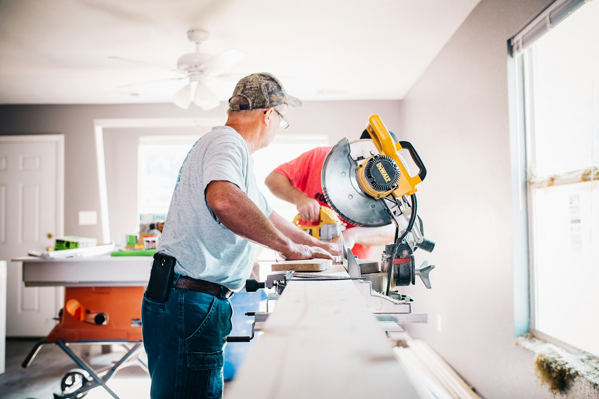
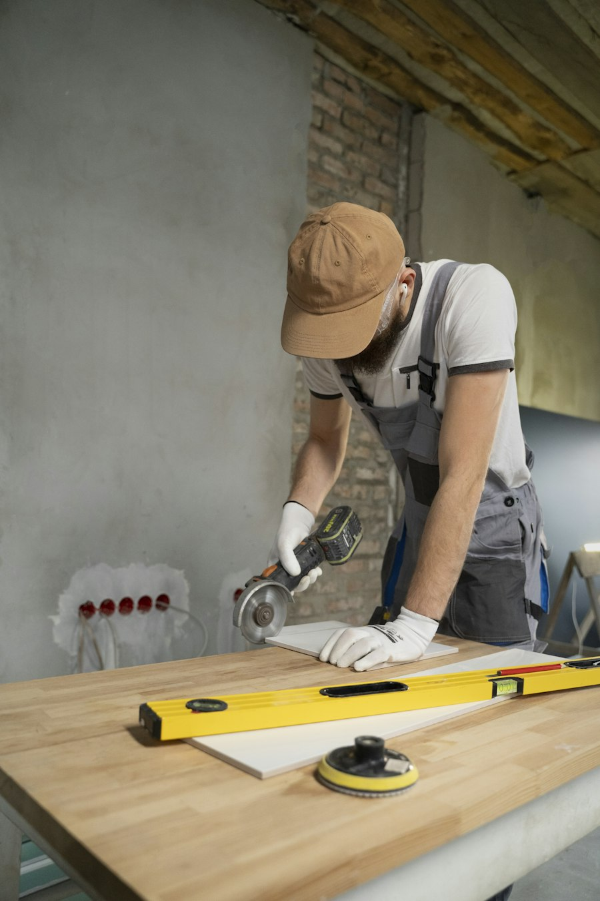
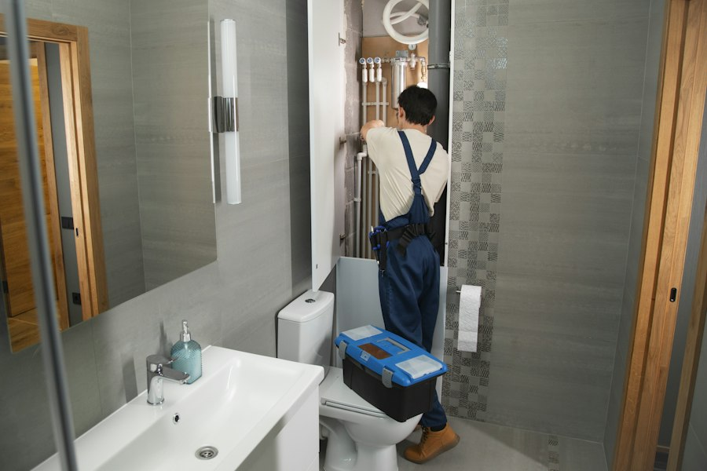

Owner Robert provides practical home repair solutions with a focus on dependable service, quality workmanship, and attention to detail.
Handy Hands Home Repair is dedicated to helping homeowners take care of the repairs and improvements their homes need. Owner Robert provides practical home repair solutions with a focus on dependable service, quality workmanship, and attention to detail.
We understand that even a small repair can make a big difference in the comfort and functionality of your home. That is why we approach every project with care and work to provide solutions that homeowners can rely on.


Our goal is simple: make home repairs easier for homeowners. From everyday maintenance needs to home improvement projects, we focus on getting the work done carefully and efficiently.
